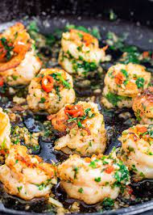

Chile Garlic Shrimp

Description
A favourite tapas dish, these Spanish prawns are infused with the flavours of garlic, olive oil and chilli. Easy and authentic!
Serves 4
Ingredients
- olive oil
- 1 head garlic, peeled and chopped
- whole dried red chillies, to taste, crushed
- 500g fresh prawns, peeled and deveined
- salt to taste
- 1 handful chopped fresh parsley
Steps
Prep:15min › Cook:10min › Ready in:25min
- Heat a generous amount of oil in a frying pan (about 0.5cm of oil). Add the garlic and chilli and fry for a minute till fragrant, then remove and set aside.
- Add the prawns to the hot oil. Stir and cook till opaque. Once cooked, add the garlic and chilli back to the pan. Add salt to taste. Cook for 2 minutes more, then serve immediately with chopped fresh parsley sprinkled over top.